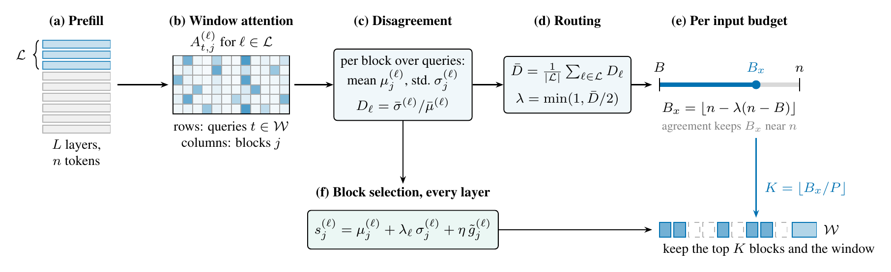
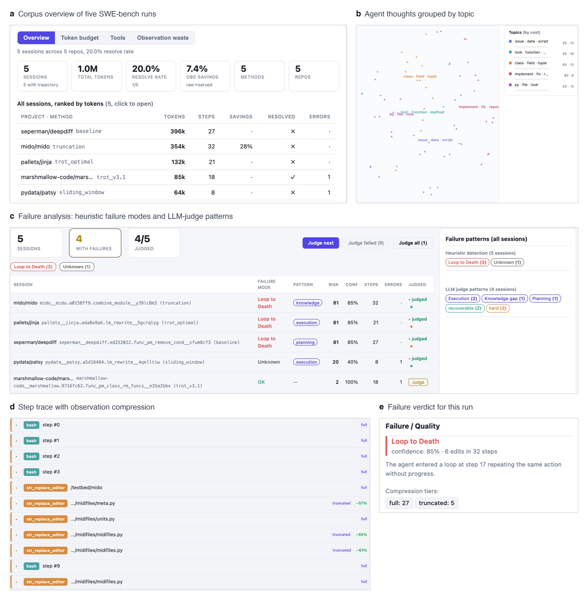
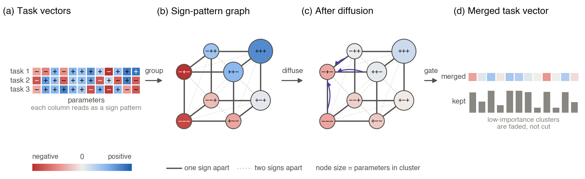

Blog
Readable summaries of research projects: the problem, the method, how it compares and what the experiments show.
-

FitKV: Fitting the KV Cache Budget to Each Input Each input gets its own KV cache budget from the agreement of its own attention, keeping 96% or more of full cache accuracy at 128 tokens. -

Crossroads: Visual Analytics for Agent Sessions A visual analytics system that explains where an agent session spent its tokens and why it failed. -
 HazEP: Catching Agent Errors Before They Cascade An online hazard model that predicts when an agent error is about to cascade, and intervenes while the run is still recoverable.
HazEP: Catching Agent Errors Before They Cascade An online hazard model that predicts when an agent error is about to cascade, and intervenes while the run is still recoverable. -
 TROT: Triage of Observation Tokens for Efficient LLM Agents Cost ordered triage of agent observations raises SWE-bench resolve rate while cutting tokens by half.
TROT: Triage of Observation Tokens for Efficient LLM Agents Cost ordered triage of agent observations raises SWE-bench resolve rate while cutting tokens by half. -
 Where Do the Tokens Go? Context Churn in Real World Agent Sessions A study of real agent sessions: 96.9% of input tokens are re-reading context, and cheap fixes avoid most of the waste.
Where Do the Tokens Go? Context Churn in Real World Agent Sessions A study of real agent sessions: 96.9% of input tokens are re-reading context, and cheap fixes avoid most of the waste. -

SignGraph: Merging Models by the Patterns Their Signs Make Grouping parameters by their sign pattern across tasks, and diffusing consensus over a Hamming graph, wins more merging slots than all baselines combined.